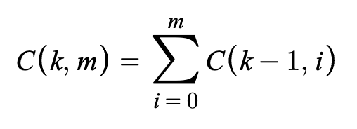
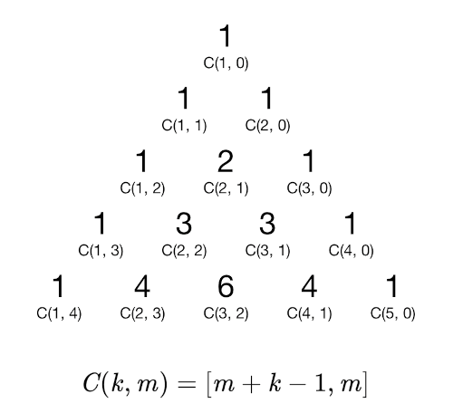

14 Feb 2022
First, a short word on notation.
I will formally define a cellular automaton as a three-tuple (H, S, u).
To see how these three components define a cellular automaton, suppose we have an infinite n-dimensional grid, and that each cell in the grid is labeled with a state. The cells can be thought of as elements of ℤn, and the global state of the grid can be thought of as a function g : ℤn → S assigning each cell to its state. For every cell c, we can define a function fc : H → S such that fc(d) = g(c + d). This function gives the state of each cell in the relative neighborhood of c. Lastly, the state of each cell c in the next generation can be calculated by u(fc).
If |H| = m and |S| = k, how many cellular automata are possible? Well, the size of the set H → S is km, and the size of the set (H → S) → S is k^km. This means there are k^km choices of u, and therefore k^km cellular automata. If we only consider automata similar to the Game of Life, that is, 2-state 2-dimensional automata using the Moore neighborhood, then the answer is 2^29 = 2512 ≈ 1.34 * 10154.
However, the k^km formula is somewhat misleading. Many of those automata could be rotations or reflections of each other. And many of them are equivalent up to permutation of states. So if you want to figure out the number of automata that actually behave differently, you need to account for the number of symmetries of H, and the number of permutations of S.
One important class of cellular automata is those that are totalistic. In a totalistic automaton, the configuration of a cell's neighbors does not matter when determining its future state. The only thing that matters is the number of neighbors that are in each state. We can define an equivalence relation ~ on the set of functions H → S such that f ~ g if and only if |f-1(s)| = |g-1(s)| for all states s. We can then define a totalistic automaton as a three-tuple (H, S, u) where u : (H → S)/~ → S. This is a restriction of the original definition; basically, it forces the automaton to treat certain cases the same.
If |H| = m and |S| = k, the size of the set (H → S)/~ is the binomial coefficient [m + k - 1, m]. Each element of (H → S)/~ is a way of assigning the elements of S to natural numbers such that the sum of those numbers is m. For example, if there are 3 states (a, b, and c), and 9 cells in the neighborhood, we can assign each state a number as follows: a → 1, b → 4, c → 4. This assignment is valid because 1 + 4 + 4 = 9.
The number assigned to c is uniquely determined by the numbers assigned to a and b, because the total sum must equal 9. So instead of looking at combinations of three numbers that add to 9, we can look at combinations of two numbers that add to something less than or equal to 9. If we define C(k, m) as the number of combinations of k numbers that add to m, we can write that fact as
It is also clearly true that C(1, m) = 1. Therefore, the values of C correspond exactly to the binomial coefficients.
If |H| = m and |S| = k, the size of the set (H → S)/~ is C(k, m) = [m + k - 1, m]. So the number of totalistic cellular automata with absolute neighborhood H and state set S is k^[m + k - 1, m]. If H is the 2-dimensional Moore neighborhood and there are 2 states, the number is 2^[10, 9] = 2^10 = 1024.
The Game of Life is not totalistic, because when determining the future state of a cell, the cell itself is considered separately. In Life, a cell will be alive in the next generation if there are three live cells in its neighborhood, or if there are four live cells in its neighborhood and the cell itself is currently alive. Therefore, the Game of Life cannot be defined with a function (H → S)/~ → S, but it can be defined with a function (H → S)/~ × S → S which takes the current state of the cell into account. That is the definition of an outer-totalistic cellular automaton.
If |H| = m and |S| = k, the number of outer-totalistic automata is k^k[m + k - 1, m]. If H is the 2-dimensional Moore neighborhood and there are 2 states, this value is 2^2[10, 9] = 2^20. Actually, to avoid redundancy, we should use the external Moore neighborhood (the Moore neighborhood without (0, 0)), so the true number is 2^2[9, 8] = 2^18. These automata are precisely those which can be described in B/S notation.